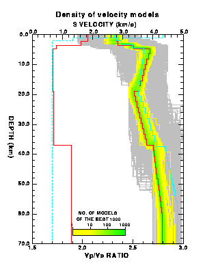

Receiver function utility programs
This page describes the utility programs in the package NA-sampler which related specifically to the RFI example. These pages are not intended to be a complete description of all features of these codes, just a general guide. Please refer to the input example files, the README files and the source code for more information. Note that you are welcome to change any of these programs but you do so at your own risk.
Several of these codes were originally written by Dr. T. Shibutani, (RCEP, DPRI, Kyoto Univ., Japan).
As described in the main NA-sampler manual, the RFI subroutines use several input and output files. All of which are in sub-directories of data/rfi_files. The main one is rfi.in, which contains parameters associated with the input data and the names of the other I/O files.
Two other input files are used. In the default setup these are,
-
rfi_param - in sub-directory NA_MDL, which contains
the bounds of the model parameters (Thicknesses, velocities and
Vs/Vp ratio's in each of 6 layers).
rec_func - in sub-directory ORF, which contains the one or more input (stacked) receiver functions.
rec_models - in sub-directory NA_MDL, which contains all models generated at each iteration of the NA in a convenient format.
rec_func - in sub-directory NA_SRF, which contains the predicted receiver function from the best fit model.
- Plotting Receiver functions
- Plotting ensembel of velocity profiles
- Converting to and from NAD files
- Calculating synthetic receiver functions
Plotting receiver functions
The RFI graphics program plot_rf can be run on the 500 iteration example with,
-
> cd rfi_files/rfi_plot
> run_plot_rf-p_demo (or run_plot_rf-x_demo)
Each of these is a shell script which supplies some parameters to the program and produces either X output to the screen, or postscript output to a file called plot_rf.ps.
Here is an example,

The program plot_rf reads the observed receiver function in the sub-directory called ORF and the predicted receiver function in the sub-directory NA_SRF. It also reads in a colour palette from file PS_utl/pal.in and details of the frame annotation from PS_utl/frame.in.
The shell scripts named run_plot_rf-x and run_plot_rf-x produce similar plots for the latest run of rfi_na. For more information look at the shell scripts and the source code.
Note that the X-graphics version will crash if netscape is running because of a conflict in colour tables.
Plotting velocity profiles
The RFI graphics program plot_models can be run on the 500 iteration example with,
-
> cd rfi_files/rfi_plot
> run_plot_model_demo
This is a shell script which supplies some parameters to the program and produces a postscript file. The name of the file is specified in the shell script. In the demo it is called density_plot.ps.
Here is an example,

The program plot_model reads the models from the ascii file rfi_models in the sub-directory NA_MDL, and the parameterization from the file NA_MDl/rfi_param. It also overlays a reference velocity profile read from the file NA_MDL/model_ref if this file exists. In each case the directory is fixed but the filename is specified in the shell script.
The shell script named run_plot_modelbw_demo plots a greyscale version of the same plot.
The shell scripts named run_plot_model and run_plot_modelbw produce similar plots for the latest run of rfi_na.
In the above figure the red model is the best fit model and the blue profile is a reference model. The coloured section shows the best 1000 models and the gray section shows the remaining 9000 models.
For more information look at the shell scripts and the source code.
Converting NAD files
-
As stated above the main output file from the RFI sub-routines
is an ascii file containing the ensemble of models in sub-directory
rfi_files/NA_MDL. Some simple programs are provided which
convert between direct access NAD files produced by the na_sampler
routines and this ascii RFI file.
The source of these programs is in src/nad/nad_convert
and they serve as examples of reading and writing NAD files.
(See NAD files for a description of
NAD file format.)
A NAD file produced by rfi_na can be converted to the ascii RFI file with,
cd data/nad
nad2rfi input_nad_file output_rfi_file
cd data/nad
rfi2nad input_rfi_file output_nad_file
Generating synthetic receiver functions
The RFI utility program synrf can be used to generate a synthetic receiver function from the velocity model in the file NA_MDL/model_ref with,
-
> cd rfi_files/rfi_plot
> run_synrf
Again this is a shell script which supplies some parameters to the program (including filenames). The resulting receiver function is written as a sac file to the directory NA_SRF. In the example the output file name is model_ref.syn. It can now be plotted using the program plot_rf.
In a similar fashion the script run_synns can be used to run the program synrf_noise to generate a receiver function with noise added. The noise amplitude is input in the script.
Related sites:
- NA-sampler back to main user guide.
- splot - general graphics program for display of multi-dimensional ensembles.
- NAD - explanation of direct access NAD files.
- NA homepage
- Malcolm's homepage
Last modified 12th October 1999.